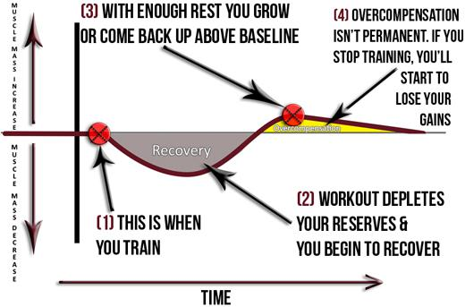

FREQUENCY: HOW OFTEN TO HIT EACH BODY PART
In the first 10-week long THT training cycle, you'll train 3 days per week, doing 2 sets to failure for each body part and training the full body in each workout. Again, each body part is trained 3 times per week with a fairly low volume (amount of sets).
In the next THT cycle, you'll do a max of 8 sets for each body part, but you'll train just 2 body parts per day to really blast it. You'll train 5 days per week in total. So you can see each body part is trained once per week with a moderately high volume (amount of sets).
THT produces MAXIMUM muscle growth with precise, efficient, effective workouts, while ensuring that you neither over-train nor under-train. The more VOLUME (sets) you do, the longer it takes your body needs to recover and grow.
Now, if you're wondering why you can't just do a high number of sets AND also train each muscle more frequently in order to “speed up” results...the following few paragraphs are for you. You need to read and understand what I'm about to say – your gains depend on it!
If you train a muscle again before it has had a chance to finish the recovery and growth process, you simply will NOT grow. You are OVERTRAINING and actually working against yourself!
I created a concept known as the PEAK OVERCOMPENSATION POINT to illustrate this (POP for short).
Overcompensation in this context simply means growth i.e. the body putting back more muscle than was there before the workout. And remember that you don’t overcompensate (grow) until you’ve finished RECOVERING.
Too many sets will virtually guarantee that you won’t even be recovered, let alone have grown before you hit that body part again. THE RESULT: Overtraining and a lack of progress.
Here’s a diagram to help illustrate the point.

If you workout at point (1), you need to wait until point (3) for maximal growth. Your body will dip into recovery (2) first before the process of compensating begins. From this we can define POP as:
POP is the period of time it takes for your workout to produce MAXIMAL GROWTH and BEFORE the muscle starts to ATROPHY (get smaller) again.
IT'S LIKE PICKING A SCAB – Ever fall and rip some skin off your knee when you were a kid? Immediately after the event, the body went to work and started the recovery/repair process. You formed a scab.
What did your mother tell you? “Don’t pick that scab or it won’t heal!” This is a great analogy for muscle growth. A workout only STIMULATES growth, it does not PRODUCE it.
The body produces the growth all by itself in the inter-training periods; you just have to leave it alone and REST.
So how do you know for sure if you’ve overcompensated?
Because the size of a muscle is proportional to its strength, if you’re stronger on your next workout, you’ve overcompensated. Therefore, if you complete more reps on the same exercise during the next workout, you can be confident that you’ve overcompensated. And you'll do that a lot on THT!
(Note: there is some good research indicating that supplementing with creatine can optimize the recovery process. UK/Europe Link.